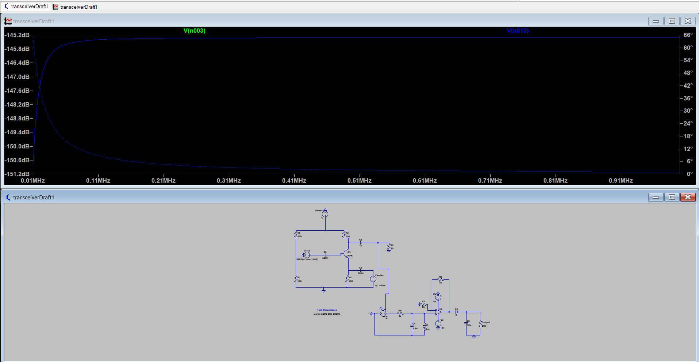
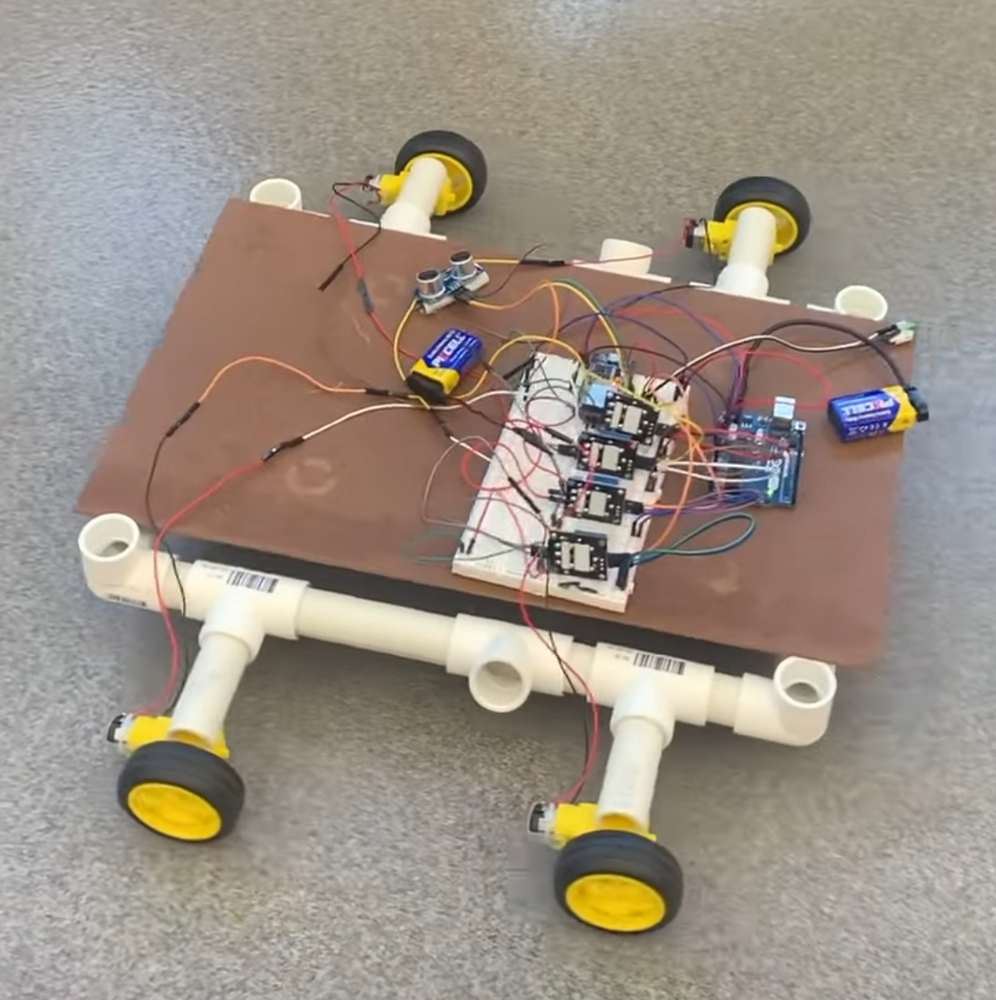

About Me
Hello, my name is Arsh, I'm an electrical engineering student studying at the New Jersey Institute of Technology (NJIT) with a track of RF engineering.
My interest in RF began during my electromagnetics course (ECE361). Although the material was challenging, it sparked a genuine fascination with the field and its applications.
This past summer, I took the initiative to earn my amateur radio license and have since been working on building an AM radio transceiver. I'm enthusiastic to continue developing my skills through hands-on experience and advanced coursework as I work toward a professional career in the field.
What Else?
Physics Tutoring: My current job at NJIT is in the Department of Physics as a tutor. For a few hours a week, I work in the Physics Tutoring center to help students through six classes of information, ranging from everything like Newton's laws all the way to quantum mechanics. I enjoy working with the students, and I like that it's made me better at communicating ideas to others who learn differently
Solar Development Workshop: Located out of Passaic County Community College (PCCC), this summer I've been working as part of Dr. Ravi's group helping students learn about photovoltaics and solar panels. I've been able to learn a bunch myself about the chemistry behind these cells, and Dr. Ravi shares insights into his research on solar cells through his papers
IEEE: One of my favorite commitments is as part of NJIT's IEEE Student Branch. We serve the ECE body here at NJIT with kits and maintain one of the largest spaces of any club on campus. From now until next year, I'm the secretary for the branch, and previously was the project room manager. I find it pretty rewarding to manage the internal committee now, which is a team of me and six other students making sure IEEE's space is kept in good condition, and maintaining our social media presence
Eta Kappa Nu (HKN): HKN's an honor society that I was inducted into earlier this year. I plan to be the tutor for the electromagnetics class the next semester to help many of my fellow students prepare for the class and its exams
Antenna and Propagation Society (APS): APS is a new club coming to NJIT. We are currently in the process of creating the club, going through both the procedures in the national society and also through NJIT's student senate in order to make it
Skills
Technical Skills
- Spice Simulation: I use NI Multisim and recently started using ltSpice for spice simulations
- Computer Aided Design (CAD): I've mainly used Autodesk Inventor, although I've worked a little with AutoCAD as well
- PCB Design: My newest tool, I'm currently learning how to use Altium Designer for schematics and pcb designing
Programming
- Python: My strongest language, I've been using this since high school. Next semester, I'll be taking a class in machine learning to better utilize it
- C++: Primarily in the context of microcontrollers like Arduino and ESP32
- MATLAB: Used for my classes and I've started using it for its RF toolboxes
Electronic Equipment
- Vector Network Analyzer (VNA): I bought a NanoVNA off of amazon and plan to use that for testing the VSWR for the transceiver. I'll also be using a VNA on a bench next semester in my RF class
- Spectrum Analyzer: I haven't used it much yet, but I will need it in developing the physical antenna and keeping the harmonics down
- Oscilliscope: I'm very comfortable using an oscilliscope, having used it in our Analog and Digital Lab (ECE294) and as a lab bench manager for IEEE
- Soldering Iron: I've done some soldering as practice and with helping younger students in using the irons safely on solder boards. I will be using it more once I make the PCB
- Signal Generator: The signal generators at NJIT go up to 15MHz and are capable of providing several different types of waves. I've used them in various projects and labs for classes
- RF Power Meter: I haven't used this yet, but I am intending to get one in a few months for setting up my own ham radio shack at home
Other Skills
- Ham Radio Operation: My callsign is KE2GIG (General Class license), I've been meaning to start next semester or when I can complete my own radio
- Team Collaboration: I work well in group settings, clearly communicating my ideas while actively listening and incorporating feedback from others to reach a goal
- Learning: Being in university has given me the opportunity to gain knowledge not only from professors, but also from guest speakers, researchers, and a lot of my friends/classmates. I love learning complex material and equally value opportunities to share my knowledge with others
- Problem Solving: Challenges in engineering are inevitable, but I like to tackle them with persistence and a problem solving mindset. I consistently put in the effort to find solutions, utilizing my available resources and seeking help when necessary. It's this adaptability I bring to all my work
Projects
AM Radio Transceiver
- I started this project back in July; the goal is to make a fully working AM transceiver entirely from scratch
- It's pretty ambitious, but I've been chipping away at it slowly and it's been making me learn about all the softwares used in industry
- The next steps are in finishing the ltSpice simulation and also working on the pcb in Altium Designer

This is the first draft I made using NI Multisim. The problem with this software is that it isn't able to compute higher than several megahertz frequencies. I'm currently redoing the numbers and running it in ltSpice

This is the results I got from this circuit. It matches the results I wanted, but I will be redoing this in ltSpice to get the results on the frequency I need
This is the first iteration I've done on ltSpice. It isn't working, but I'm currently working on making sure that it works using the original component values that I already solved for, then retesting with more accurate numbers for the 435MHz signal I want to use

I posted a photo to show the work that can be done on MATLAB. Of course, not all the tiles I'm showing were needed, I just wanted to show what it's capable of apart from being able to help me with the sizes
RC Car
- This is one of my older projects, but I love the RC car a lot because of how much it forced me to learn about team work, working under time constraints, problem solving, and more technical skills relating to microcontrollers.
- The idea was a simple one, we wanted to make a car that could be controlled remotely. But problems arose in two main areas: the power requirements for all of the different components was wholeheartedly complicated, and the ESP32 wifi protocols (which was what we originally intended to use) didn't work with NJIT's firewall. 
- My contributions were in writing the code in the ESP32s, developing the website, and in wiring up all the circuitry. Unfortunately, I didn't think of saving my code from my projects, so there's only the finished product to show for it.
The result was a car that was neither efficient nor reliable. It was a lot about compromise, having to reduce the weight of the car even if it looked aesthetically displeasing, learning how to use relays in order to get the voltage up to par, and using up what is considered an exceptional amount of batteries.
Contact
Email: arshbhamla@gmail.com
LinkedIn: https://www.linkedin.com/in/arshbhamla/
Github: https://github.com/arshbhamla
Documentation is found on separate page. Click on the hyperlink on the top to get there.